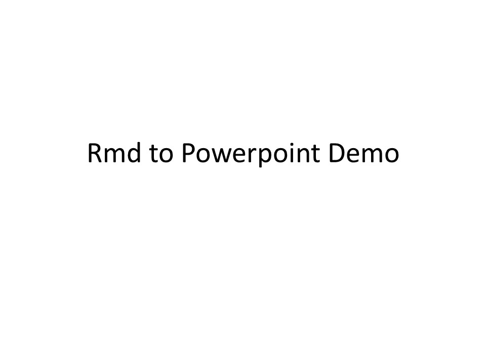
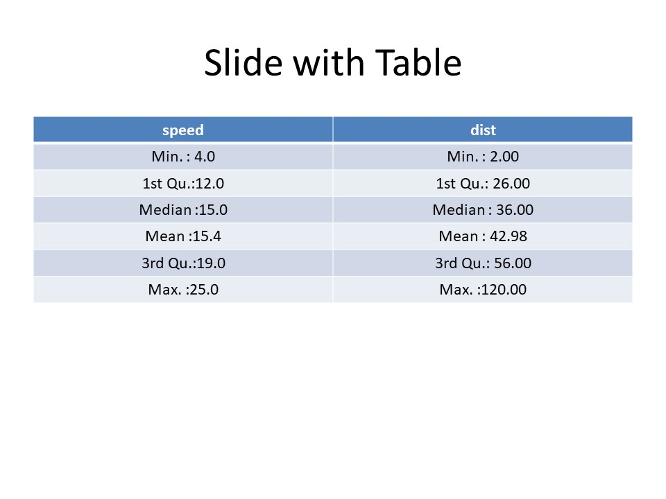
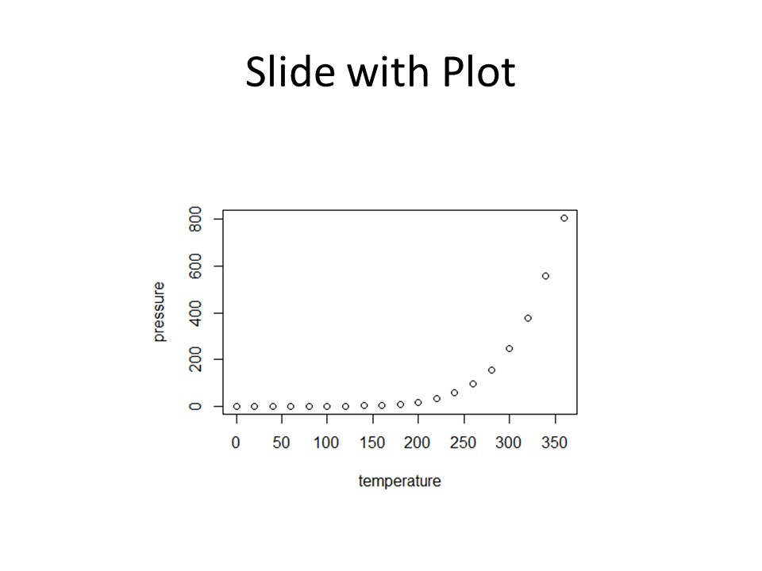
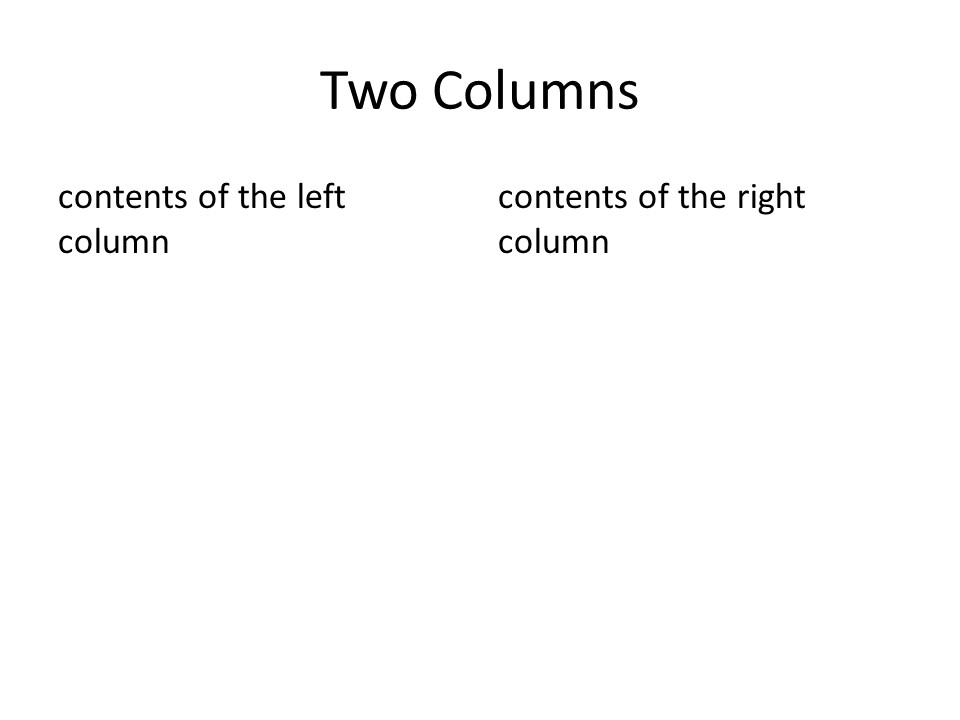
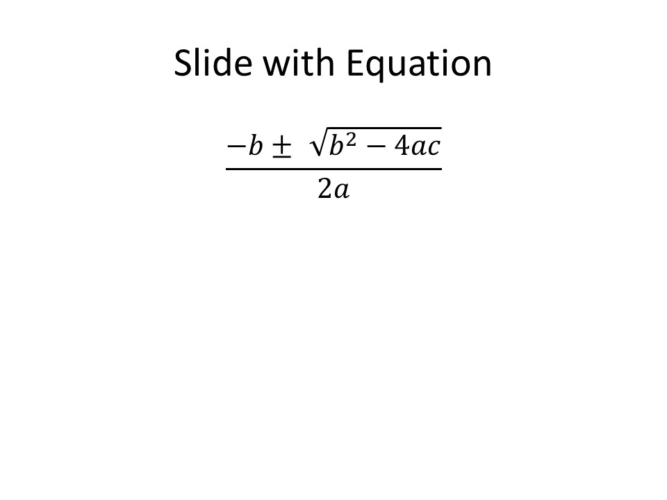

May 9, 2020 R markdown
Despite knowing that R markdown (through the amazing Pandoc) can create Powerpoint presentations I haven’t used it until very recently. In doing so I thought I would write a quick demo and show what the default slides look like.
We’ll talk about customisation and the end but let’s start with the defaults and demo some things you can do. Most of the code included is the in the template document. This post is also the first time I’ve used the excellent addin for inserting images into blogdown.
The YAML for setting things up is as you would expect
---
title: "Rmd to Powerpoint Demo"
output: powerpoint_presentation
---which produces a pretty bland title page.

New Slides are started with either a header 1 #, header 2 ## or if you want a new slide without a header use a horizontal rule ---. Standard markdown syntax can be used within slides and any footnotes you include will be automatically placed in a final slide entitled Notes.
## R Markdown
You can include **Knit** markdown as *normal*^[A footnote].
Including links like [my website](https://aj2duncan.com).

Bullets can be added, either without numbering
## Slide with Bullets
- Bullet 1
- Bullet 2
- Bullet 3
or with
## Slide with Numerical Bullets
1. Bullet 1
2. Bullet 2
3. Bullet 3
We can include R as we would expect
## Slide with R Output
```{r cars, echo = TRUE}
summary(cars)
```

The output can also be put in a table
## Slide with Table
```{r table}
knitr::kable(summary(cars), row.names = FALSE)
```

Likewise we can generate a plot
## Slide with Plot
```{r pressure}
plot(pressure)
```
You can use two columns but pandoc does not currently see the issue here support custom widths. However, it does seem possible depending on any template that you may be using.
## Two Columns
:::::::::::::: {.columns}
::: {.column}
contents of the left column
:::
::: {.column}
contents of the right column
:::
::::::::::::::
Finally, you can also use LaTeX formatting for equations.
## Slide with Equation
$$
\frac{-b \pm \sqrt{b^2 - 4ac}}{2a}
$$

If you want to using a different template then just like with a word document you can provide a template file in the YAML header. I’ve tested this with a generic Powerpoint and the results can be seen in the gif below.
---
title: "Rmd to Powerpoint Demo"
output:
powerpoint_presentation:
reference_doc: my_template.pptx
---This RStudio article gives further details on templates and also how Pandoc decides on how the headers/horizontal lines start new slides.